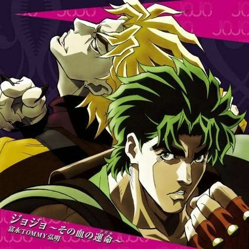

Why You Should Watch JoJo's Bizarre Adventure?
JoJo’s Bizarre Adventure is one the most outrageous and joyous series I have ever watched. You owe it to yourself to experience it. Describing what JoJo’s Bizarre Adventure is about is much harder than describing its pedigree. It’s one of the most famous and influential mangas ever, which was finally adapted into an anime in 2012, and will soon enter its fifth season. Many of the character concepts, images and ideas—like “Stands,” a physical manifestation of a psychic power—have become frequently-used tropes in other anime, manga, and even games. The seminal manga group CLAMP began their careers making fan comics based on JoJo characters, and the Persona series in particular owes a lot JoJo’s, as the titular personas are just Stands by another name. Hirohiko Araki, JoJo’s writer and artist, is so renown that his work has been shown at the Louvre. That last fact alone was enough for me to give the show a try, but I had no idea what I was actually in for.

JoJo’s Bizarre Adventure is the story of the Joestar family, starting with Jonathan, a mild mannered Englishman who strikes up a rivalry with Dio Brando, his adopted brother. Because of a cursed mask, Dio becomes a powerful vampire, and Jonathan swears to stop him. After learning a fighting move called the “Ripple,” which allows Jonathan to kill vampires by punching the sun into them, he goes on a quest to defeat Dio for good. How does this already weird concept get weirder, you ask? Well, you’re in for a ride.
Each arc of the manga and anime follows the life of another member of the Joestar family, tracing their adventures through the generations. After Jonathan comes his grandson Joseph, who must defeat the vampiric Pillar Men, and then his grandson Jotaro Kujo, who develops a Stand and goes on an international trip to finally kill Dio.
JoJo’s Bizarre Adventure is the story of the Joestar family, starting with Jonathan, a mild mannered Englishman who strikes up a rivalry with Dio Brando, his adopted brother.
Each of the eight arcs of the series takes a new Joestar descendent on a dramatic new quest, each one exploring a new and more inventive setting and genre of storytelling. After globetrotting with Jotaro, we join Joseph’s illegitimate son Josuke in the small town of Morioh and track down a Stand-using serial killer. Next comes Giorno Giovanna’s mafia story in Italy, then Jolyne Cujoh’s jailbreak, then a deadly horse race set in an alternate universe, and most recently, the pygmalion tale of another Josuke, who also has bifurcated pupils and two sets of balls. Each time you meet a new JoJo and settle in for their new story it is a delight to see creator Araki find new heights of drama, new ideas for psychic powers, and new fashion boundaries to push with his outlandish designs, my favorite of which is Jotaro’s hat that is also his hair..
When you watch JoJo’s, you’re never going to be bored, which is a true delight. As you spend time with the current protagonist’s group of friends and allies, seeing them learn to work together, trust each other, and learn how to use their offbeat powers in creative ways, even the more out-there villain plots seem intimate and understandable. The idea of a serial killer with psychic powers in a sleepy town who murders women for their hands is, on its face, completely bonkers. In terms of things that happen in the JoJo’s universe, it’s just another day.
This doesn’t even touch of the beauty of Araki’s art and his references to high fashion, or his obsession with American pop music, which he names many characters and Stands after—my favorite being the character of Robert E. O. Speedwagon. There are small touches that amuse me about JoJo’s, like Araki’s very obvious obsession with Italian culture that he shoehorns in more and more as the series goes on, or the more fantastical individual episodes like the one where Josuke punches a plate of pasta into its component parts. On the whole, JoJo’s Bizarre Adventure is an invitation into a melodramatic, technicolor world, and you should give yourself the gift of seeing it for yourself.
Taken from "kotaku.com"